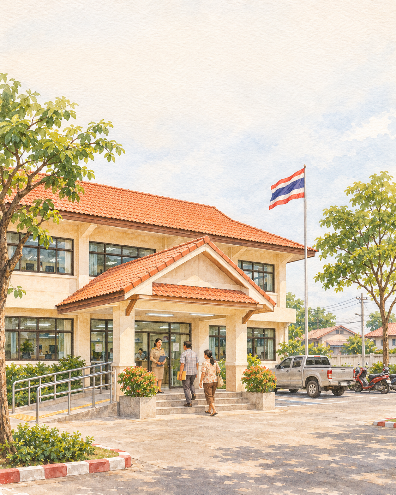

1A · หน้าเทศบาล — ใบไม้และธง

Locked-off camera. Animate the provided illustration with a gentle, clearly visible breeze: the outer tree branches and leaves sway naturally, and the Thai flag ripples smoothly around its fixed pole. The building, vehicles and people remain still. Preserve the original composition, warm watercolor texture, lighting, colors and crisp architectural details. Motion stays continuous and physically natural. Let the breeze complete a slow cycle and settle close to the starting pose for a looping website background. Keep the camera completely stationary throughout. Silent scene.เก็บ Prompt เป็นไฟล์ .txt